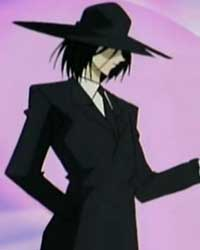

Forums galactiques > Assemblée Galactique : diplomatie officielle > Archives des présentations
Pages : 1 2 ... 27 28 29 ... 63 64
| Leia la sanguinaire Respect diplomatique : 46  10/12 ETU 18:32 | Score : 0 Détails Merci et bonjour à vous aussi Felinia et Faust
| ||
| reine Em Respect diplomatique : -7  10/12 ETU 18:33 | Score : -3 Détails Pardon
Bonjou je suis un rein humaine et je vine de commancer apocalypsis | ||
| Béhémothaure 7.1 Respect diplomatique : 409  10/12 ETU 18:53  | Score : 10 Détails Bienvenu rein humain ! Tous mes souhaits pour vous greffer avec Espérance.
| ||
| Ernest Clarendau Respect diplomatique : 36 10/12 ETU 20:41 | Score : 19 Détails -Tu la tiens bien?
-Oui! Je l'enfonce comme ça? -Excellent! Maintenant, tu fais un mouvement de va-et-vient! -Comme ça? -Exactement. Et quand tu as terminé de la rouler, tu prends la pâte et tu la mets dans le plat à tarte. Ernest Clarendau adorait faire la cuisine avec son fils. C'était l'un de ses menus plaisirs de la vie, et son emploi du temps chargé ne le lui permettait pas souvent. D'autant plus qu'ils seraient bientôt éloignés l'un de l'autre, Ernest ayant été nommé Ambassadeur de Polype Zeusique à l'Assemblée Galactique. Sa famille resterait sur son monde natal, tandis que lui partirait sur Ambassade, pour faire acte de présence au nom de la Chambre des Communes. -Et la je mets les fraises? -oui, en saupoudrant d'un peu de cannelle. -Comme ça? -Et ensuite, place les lanières de pâte sur le dessus, pour faire joli. Ernest plaça lui-même la tarte dans le four. Dernière journée, dernière activité en famille. Le diner risquait d'être morose. Qu'à cela ne tienne. Il faisait ça pour sa famille, pour qu'elle ait une meilleure vie. Polype était une planète pauvre, à peine sortie d'une grave crise économique, et les emplois étaient rares. Ernest était au gouvernement depuis dix ans, exemple type du fonctionnaire trop compétent pour être apprécié de supérieurs jaloux de ses qualités. C'était l'un d'entre eux qui l'avait nommé sur Ambassade. Il aurait un meilleur salaire, et ne menacerait plus le poste de ses patrons. -Tu es sur qu'on ne peut pas venir avec toi? -Oui. Ambassade est trop éloignée, je ne veux pas que vous laissiez vos amis. Ernest entendit la porte d'entrée s'ouvrir. -Ta mère est rentrée, va lui dire bonjour. Le petit garçon courut vers sa mère, tandis qu'Ernest restait la, perdu dans ses pensées. | ||
| DarkDream Respect diplomatique : 12 12/12 ETU 17:14 | Score : 9 Détails Bonjour à tous les membres de l'Assemblée et les autres...
Je suis nouveau dans cet univers, je me suis retrouvé ici par hazard. J'etais chercheur dans mon monde, mais mes expériance sur le néant et l'anti-matière ont mal tourné. Je me suis donc retrouvé propulsé dans ce monde et forcé à m'y adapter... Certains d'entre-vous décendent de grands rois, empereur, etc... mais moi, personne ne connait mon père, ma mère, mon grand-père, etc... même moi, j'ai oublié mon nom... seule un pseudonyme fait ressortir ce qui existe en moi : DarkDream. Je me suis fixé un but, devenir un dirigeant aimé de son peuple, et ainsi peut-être mon nom serra écrit dans l'histoire... Que dis-je là... je n'ai pas de nom... Après ce discours vous allez surement oublier mon but et mon passé, comme tout mes ancêtre je serais éffacé, mais j'espère réapparaitre et vous graver DarkDream dans la mémoire. Ce n'est que mon histoire que je viens de vous faire part... Je pourrais vous parler de moi... non ça ne vous interesse pas... bon allez je me lance : Je me fais apeller DarkDream, mais ce n'est qu'un pseudonyme, je ne me rapelle plus de mon nom. Je suis humain, j'ai était chercheur en néantologie mais j'ai fait une erreure de calcul quelque part... Sur mon ancienne planète mes proches me reprochait d'être trop "mou" et que j'ai de très mauvais goût en habillement. Voilà, vous en savez plus sur moi... mais je vous laisserais en apprendre d'avantage avec le temps. Sur ce : Salutations. | ||
| Garibaldi Respect diplomatique : 281 13/12 ETU 00:08 | Score : 5 Détails Salutations,
Je suis Anton Garibaldi. Issu d'une lignée de militaires, j'ai été élevé dans le culte de l'honneur et de la discipline. J'ai, au cours de ma carrière, servi les valeurs de l'Alliance Eternelle avec droiture et je n'ai pas démérité de mes ancêtres. Un jour, pourtant, un commandant de secteur m'a donné un ordre que je n'aurais pu exécuter sans trahir la justice et l'honneur militaire. J'ai donc pour le première fois désobéi à un supérieur et j'ai décidé de quitter l'armée. Un ami de l'état-major m'a alors informé que le commandant en question voulait me faire assassiner avant que j'ais l'occasion de m'exprimer devant la cour martiale. Le système où était basée notre flotte étant complètement isolé depuis le grand silence radio, cet officier corrompu régnait en quasi-despote sur ses pairs et je savais que la menace était réelle. Je décidai donc de prendre la fuite. Une partie de ma famille a désapprouvé ma décision et m'a renié. Ma femme et mes enfants m'ont, quant à eux, suivi en exil. Avec ceux de mes soldats qui me sont resté fidèles, je cherche maintenant un refuge où recommencer une nouvelle vie. | ||
| smocky Respect diplomatique : 268  13/12 ETU 00:31 | Score : 2 Détails Et bien, Bien le Bonsoir à vous Sieur Garibaldi!
Bienvenue parmis nous en Esperance!La Galaxie de tous les Espoirs!!^^ Par contre si vous fuyez un "homme corrompu" vous tombez mal!Le notre est pas mal non plus dans le genre...^^ Faites donc bien attention à vos colonies, postez des guetteurs partout et si jamais vous le désirez n'hésitez surtout pas à demander de l'aide! De nombreux commandants sont prêt à donner un peu d'eux même pour de jeunes nation telles que la votre surtout en des temps si troublés! Commandant, je vous salut et vous souhaite une longue Vie Galactique!! | ||
| Garibaldi Respect diplomatique : 281 13/12 ETU 10:47 | Score : 2 Détails Je n'aurais osé espérer un accueil aussi chaleureux, commandant.
Je compte bien mettre à profit les conseils de mes aînés avant d'aider à mon tour ceux qui nous suivrons. J'aspire à la paix et je participerai à toute initiative qui la favorisera dans la galaxie dès lors qu'elle respectera les règles de l'honneur. Je vous remercie et vous salue. | ||
| Brave Heart Respect diplomatique : 8 13/12 ETU 19:24 | Score : 8 Détails Un homme en jupe bleu,avec une chemise et blanche,un veston noir ainsi qu'un berêt vert entra dans la salle...Tous les yeux rivé sur lui se demandais "mais qui es cet énergumène?" Il avance jusqu'au pupitre et pris la parole:
Salut tout le monde! Je me présente Brave Heart Commandant d'une flotte Commerciale spécialisée dans la vente du thée,des kilts et du Whyskies... Et pour tous ceux qui se demande se que je porte c'est un KILT! Et n'essayé surtout pas de regardé en dessous surtout les mecs vous risqueriez d'être jaloux mawahahahahah... Allez c'est l'heure du thé Bye bye! Et il repartit tranquillement sans se retourné... | ||
| Herdes Respect diplomatique : 362  13/12 ETU 19:33 | Score : 8 Détails Un homme apparut dans la salle des présentations,Vêtu d'une cape et d'une capuche,et, était pourvu d'un bâton.
Bonsoir, Je suis herdes, Je viens me blottir au seins de cette galaxie à la suite d'un urgent appel,Mais je ne suis pas venu ici me tourner les pousses,j'ai entendut des commandant parler d'une guerre dans les couloirs...Elle opposerait ,"l’empire cardassian et compagnie",contre les opposants (???)... Je vois que les coups bas,et les mensonges sont de mise. Je ne suis pas ici pour vous mentir , mes positions seront ce qu'elles seront , et je serait peut être ...surement votre ennemis. Il montra la foule du doigt Vous,oui vous! Je suis le fruit d'un amour interdit, le plus détestable ,votre lanterne rouge,celui qui ce cache,celui qui efface toute les traces , Herdes le prophète vous convertira! Herdes disparut , à la place un papier ancien s'y trouver: Maman, j'ai peur !… Ne crains pas mon enfant. Avance au large et sors de toi-même. Regarde autour de toi : tout ce qui est moche, tous les gestes de haine, de guerre… Avec MOI, tu n'as rien à craindre, " car J'ai vaincu le monde " dort,dort,dort petite Espérance,et pour les morts ,rien n'est d'importance. | ||
| Hot foot Respect diplomatique : 419  13/12 ETU 19:49 | Score : 0 Détails Chouette quelqu'un qui va peut etre parler la meme langue que mon hote... Je vais tenter de prendre contact avec lui...
Quand a toi Hermes prend contact avec moi si tu est du "bon"coté... Celui des Cardassians... Warlord Hotfoot Empire Cardassian | ||
| Marhan Respect diplomatique : 9 21/12 ETU 02:16 | Score : 8 Détails Depuis quelques temps déjà, après avoir maîtrisé les techniques psychiques que l'on pourrait interpréter comme du chamanisme, le peuple de Krintor a découvert le voyage physique par la science et la physique.
Une jeune femme de teinte nacrée se lève, la finesse de ses traits en émeut quelques uns, en répugne quelques autres. Elle prend la parole d'un air absent et d'une voix mélodieuse: "A tous les représentants de la galaxie, je prends place ici, au nom de mon peupe les Krintorês. Ceci afin de nous présenter dans cette assemblée, voici notre situation et notre mode de fonctionnement: Nous avons comparé nos sciences actuelles et celles offertes par la galaxie connue, Krintor (notre planète principale) cherche juste à faire profiter les autres civilisations de ses services et technologies. Elle sait qu'elle n'est ni la première, ni la seule dans ce cas, mais pense posséder de nombreux atouts capables de prouver que nos sciences économiques et techniques peuvent être des plus efficaces. Le peuple et les représentants de Krintor pensent en groupe et se trouvent à même de se différencier des autres peuples par le commerce : leurs Sages l'ont vu et su grâce aux Oracles. Pour finir, les Krintorês (natifs de cette planète) ne se sentent pas concernés de l'emploi de leurs technologies tant que leurs services soient mis en valeur et leur survie assurée. Dans l'espérance de futures collaborations, nous vous remercions d'acoir pris le temps d'écouter la nouvelle de notre venue." | ||
| maître anubis Respect diplomatique : 32  21/12 ETU 17:33 | Score : 0 Détails Bien le bonjours dans notre emble galaxie ma chère.
Nous espérons que vous allez bien vous intégrer. | ||
| emyn muil Respect diplomatique : 42  23/12 ETU 00:57 | Score : 2 Détails Un commandant à veste noire apparut avec une volute de fumée bleue et un phoenyx aux épaules, phoenyx noir, incarnation de l'ange de sa neutralité ...
<< -Bonsoir, je me présente elfe et pirate Emyn Muil, résistant dans la galaxie 1, a fondé autrefois la coalition The Black Wing, parti de mon plein gré, je me retrouve dans un monde qui me semblait hostile dans mes premières semaines ... L'empire Cardassian, la guerre ... La république, l'empire cronosite ... Tout était confus à notre arrivée, personne à qui se fier ... Une semaine passa puis deux, Baroque Works prit naissance dans ce monde, en souvenir de l'ange noir: The Black Wing qui lui était cher, en souvenir des compagnons d'armes qui m'ont tous hissés à ce niveau, en souvenir des exilés ... En souvenir des grands combattants disparus sans laisser de traces, tous ces souvenirs qui me reviennent d'une ancienne ère désormais révolue, place à Espérance, place à l'espoir d'une vie meilleure d'une neutralité parfaite, place à un nouveau monde qui n'attend que la paix et la liberté ... Ma mission est simple: vivre en harmonie en tant que elfe et pirate d'Espérance ... Vivre en paix avec l'ange de sa neutralité ... >> Emyn Muil s'inclina, l'oiseau s'envola et tous deux disparurent dans un éclair enflammé laissant virevolter une plume bleue signe désormais d'espérance ... | ||
| KoKO Respect diplomatique : 200  23/12 ETU 00:57 | Score : 3 Détails Après des km de vols interminables ,a travers l'univers entier .
Kouac ,je crois que nous avons trouvé une galaxie où nous installer , de belles planètes ,une bonne ambiance installons ici c'est décider . Une planète remplis de palmier était dans la vu de koko . je crois que j'ai trouver la perle rare , cette planète la bas est idéale allons y . le perroquet vola ,avec ces compagnons de vols jusqu'à la planète ou des milliers de palmier et 20 % d'eau était présent apparemment . | ||
| le faucheur Respect diplomatique : 5  23/12 ETU 01:31 | Score : 5 Détails Après avoir creusé un passage entre les enferre et la surface le commandant le faucheur arriva sur une planète abandonner.
Voila je croit que j'ai trouvé ou m'installer tranquillement je vais pouvoir me préparé. Il voyait autour de lui un immense champs de pierre tombale. Je croit bien que ici je vais pouvoir m'installer, j'ai de quoi rappelé assez de mort pour venir piloté tout mes vaisseaux civile et de guerre. Après avoir rappeler quelque mort pour piloté quelque vaisseaux pour défendre cette nouvelle planète, il alla construire son palais souterrain pour pouvoir dormir as l'abri des bombes hyperatomiques et des tires ioniques. | ||
| Vioxxx Respect diplomatique : 1 24/12 ETU 18:10 | Score : 1 Détails Felk Vioxxx, un nouveau commandant pour un peuple de combatants, un peuple vivant, pour l'évolution d'Espérance.
Un commandant de la Guilde près à commercer avec tout peuples quels qu'ils soient. La recherche d'une coalition est une priorité pour le peuple Lysanxien, vos par x-com seront les bienvenus. Huck!!! | ||
| Soucie Respect diplomatique : 133 30/12 ETU 20:37 | Score : 7 Détails Une étrange jeune femme entra à l'Assemblée. Sa peau pâle, ses yeux bleus foncés, de même que ses longs cheveux et ses vêtements, la rendaient étrangement belle. Son regard semblait distant, et elle-même n'avait pas l'air d'être entièrement de ce monde. Elle ne semblait pas se préoccuper des nombreuses personnes présentes. Elle monta jusqu'en haut de l'hémicycle, fit un bond d'une hauteur inhumaine et se réceptionna sur l'une des poutres soutenant le toit de l'Assemblée.
Elle n'avait pas encore remarqué les plusieurs regards tournés vers elles. Quelques minutes, et ce fut fait. Elle sembla alors perplexe. Elle semba se parler à elle-même. Pourquoi est-ce qu'ils regardent dans ma direction? Ils ne peuvent quand même pas me voir! Elle poussa un cri effrayé. Les commandants en dessous la regardaient de plus en plus bizarrement. Et ils m'entendent! Oh non! Elle se laissa tomber de la poutre et atterrit gracieusement sur le plancher de l'Assemblée, avant de prendre la poudre d'escampette. | ||
| Ragnard Respect diplomatique : 1318  30/12 ETU 22:01 | Score : 2 Détails L'homme passait totalement inaperçu au sein de l'Assemblée, et cela ne le dérangeait nullement. Cependant, il se devait de se faire connaître des autres commandants d'Esperance, et donc s'avança.
Commandantes, commandants, anciens et nouveaux, je me dois de vous faire savoir que, moi, Ragnard et mon peuple venons de nous établir en Esperance. Nouveaux venus en cette galaxie, le peuple de Lupus ne désire, pour l'instant, que prospérer dans la tranquilité et l'harmonie. Malgré les bouleversements qui semblent remuer Esperance en ces heures, nous ne nous impliquerons pas dans l'immédiat, et adressons un salut amical à tous les commandants de cette galaxie, quel que soit leur allégeance actuelle. | ||
| black bird Respect diplomatique : 772  05/01 ETU 00:34 | Score : 1 Détails up!
les présentations c'est ici... pas besoin d'ouvrir d'autre salle... |
Pages : 1 2 ... 27 28 29 ... 63 64
Forums galactiques > Assemblée Galactique : diplomatie officielle > Archives des présentations